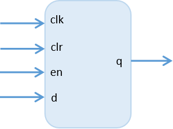
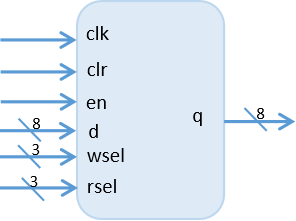
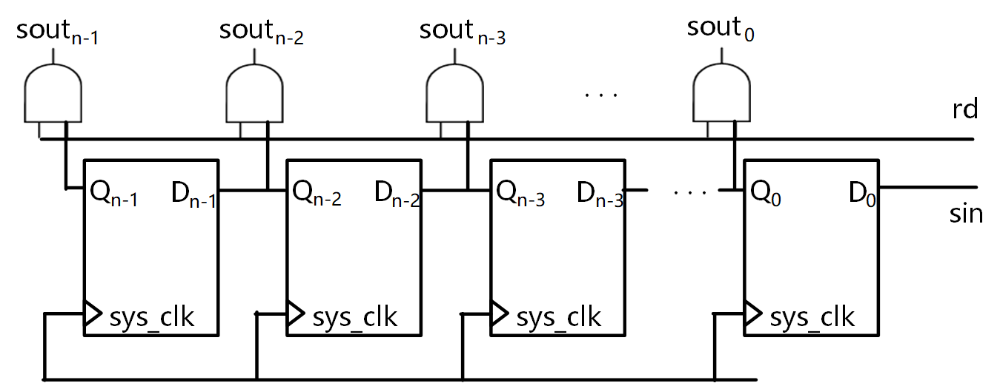
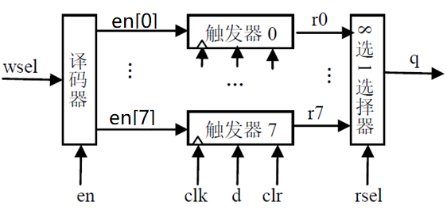

实验内容
1、实验目的¶
（1）运用Verilog语言描述时序逻辑电路，理解仿真波形；
（2）掌握约束文件、仿真文件的编写。
2、实验内容¶
2.1 D触发器¶
自选仿真完成即可
自选仿真完成即可
自选仿真完成即可
实现具有异步复位、同步使能的D触发器，接口如下：

功能说明：
A. 按键开关 S1 为异步复位信号clr输入，高电平复位，按键开关按下其对应的输入为1；
B. SW2为使能en输入，高电平使能； SW0 为数据d的输入；
C. 时钟信号连接在主芯片 Y18 管脚的100MHz的晶振；输出 q 自行选择led连接。
要求说明：
A. 编写仿真文件，需覆盖写入（跟随）、读寄存器（保持）、清零（复位）的情况。
B. 下板测试，独立设计测试步骤，需验证写入、保持、清零三种状态
2.2 8位寄存器文件¶
把（1）中的D触发器扩展为8位，将数量扩展到8个，并增加译码器和多路选择器，实现8个8位寄存器组成的寄存器文件。寄存器文件的功能是，将输入的数据写入指定的寄存器，也可以读取指定寄存器的数据，en是写使能，只有写使能有效时更新指定寄存器，不要求考虑同时读写同一个寄存器的情况。

功能说明：
A. 按键开关 S1 为异步复位信号clr输入，高电平复位；
B. en, d[7:0], wsel[2:0], rsel[2:0] 从拨码开关输入，拨码开关不指定，自行决定；
C. 时钟信号连接在主芯片Y18管脚的100MHz的晶振；输出q自行选择led连接；
编码规范要求：
- 一个文件只定义一个module；module名应与文件名一致。
- 寄存器文件的实现，8位D触发器和寄存器文件各一个module，按照实验原理一节中的电路结构图，通过例化8位D触发器实现，其他module不限。
注意
时钟clk使用上升沿posedge触发，工程中时钟很少用negedge触发
寄存器文件直接定义reg [7:0] regfile [7:0] 实现，功能上没问题，但不符合本实验的要求
按键开关，只要按一下，不是一直按着！！！
所有实验中未注明的细节可自行决定
2.3 串入并出移位寄存器¶
完成8位串入并出移位寄存器（左移）的建模，采用低电平同步复位信号。
串入并出移位寄存器（左移）的原理图

当串行输入端的数据经过N个时钟周期后，顺序移入寄存器，可在rd信号的控制下将寄存器中的数据并行输出。
编程要求
根据提示，在右侧编辑器中补全代码,完成8位串入并出移位寄存器（左移）的建模，采用低电平同步复位。
-
1位输入端口sin：串行输入数据。
-
1位输入端口rd：用于控制移位寄存器中数据的并行读出。rd = 1时，并行读出数据；否则，不读出数据。
-
8位输出端口sout：并行输出数据。
代码 sreg_sipo.sv 模板如下：
module sreg_sipo #(parameter N = 8)(
input sys_clk,
input sys_rst_n,
input sin,
input rd,
output [N - 1 : 0] sout
);
// 请在下面添加代码，完成8位串入并出移位寄存器（左移）的建模
// 预计代码6 行
/****** End ******/
endmodule
任务要求
-
完成代码编写
-
通过vivado进行仿真，要求通过仿真测试
-
通过vivado 综合、实现，查看RTL Analysis和Synthesis schematic截图
3、实验原理¶
3.1 寄存器文件电路结构¶
寄存器文件（register file）又称寄存器堆，为一组寄存器与读写控制电路构成的模块，是CPU的核心单元。 待实现的寄存器文件结构图如下所示，内部信号命名不做要求。

A. wsel 是写选择端，输入写寄存器编号
B. rsel 是读选择端，输入读寄存器编号
C. en 是高电平有效的写使能端
D. en[0]-en[7] 是内部信号，连接各触发器的使能端
E. ri 是内部信号，为触发器i的输出
3.2 时钟信号的仿真¶
时序电路仿真需要产生一个时钟信号，生成的方式如以下代码所示：定义时钟信号clk，首先在initial块中将clk初始化为0， 另用一个alyways块周期性的让clk信号翻转，周期根据实际需要调整。
`timescale 1ns/1ps
module testbench (
);
reg clk;
initial begin
clk = 0;
end
always #5 clk = ~clk;
endmodule
3.3 模块例化¶
调用模块的过程称为实例化（instantiation），每个例化模块称为模块的实例（instance）。 例化时端口连接规则请按照下面的命名例化方法，即明确定义将信号连接到的端口的名称。
<module_name> <instance_name> (
//被例化的端口与例化的端口
.<port_name> (<signal_name>),
.<port_name> (signal_name>)
);
以8位寄存器例化为例，下面实例化代码中，dff8为实现的8位寄存器模块，对应为module_name， u_dff8为实例名，对应为instance_name，若要多次例化，实例名要不同。
dff8 u_dff8 (
.clk(clk),
.clr(clr),
.en(en[0]),
.d(d),
.q(r0)
);
当例化多个相同的模块时，一个一个的手动例化比较繁琐，可用 generate 语句进行多个模块的重复例化。 generate使用请参考：https://xilinx.eetrend.com/blog/2019/100045571.html
模块例化对外部信号的变量类型是有语法要求的，请务必注意，否则会出现语法错误。 从模块外部来讲， input 端口可以连接 wire 或 reg 型变量，output 端口必须连接 wire 型变量。
| 端口方向 | 连接的外部信号类型 | 模块内信号类型 |
|---|---|---|
| input | reg or wire | wire |
| output | wire | reg or wire |
4、实验步骤¶
（1）D触发器
- 创建工程，工程名为dff；
- 编写并添加设计文件dff.v；
- 根据仿真分析要求，编写并添加仿真文件；
- 编写并添加约束文件，并综合实现，生成比特流；
- 将生成的比特流下载到开发板验证。
（2）8位寄存器文件
- 创建工程，工程名为reg8file；
- 编写并添加设计文件reg8file.v；
- 编写并添加仿真文件testbench.v，并完成仿真；
- 编写并添加约束文件，并综合实现，生成比特流；
- 将生成的比特流下载到开发板验证；
5、验收要求¶
课上验收： 8位寄存器验证
- 8位寄存器文件上板验证通过，检查内容：先向2个不同编号的寄存器写入2个随机数据，再按写入顺序读取
课后提交：
- 8位寄存器文件仿真波形分析、代码、RTL Analysis和Synthesis schematic截图
- 课后作业的仿真分析说明
仿真分析参考D触发器仿真分析示例，分析和schematic截图。